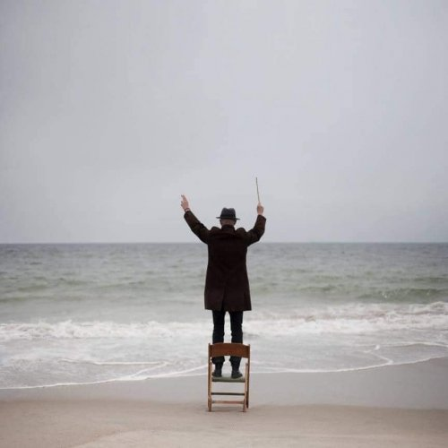

--Alan Watts
"The choices that will be made will be made, and you've no choice about that."
--Jeff Foster
"In the dream we’re absolutely sure ‘we’ choose this and avoid that and do that and not that. For the individual who thinks they’re in control of their life, that fallacy that you’re the ‘managing director’ of your life and can make it continue, that falls away, and that feels risky…"
--Tony Parsons
This time of year here in Pennsylvania, one sees many dead deer on the sides of roads. This is because it’s mating season, and deer run wildly onto roads paying zero attention to anything around them, aiming for whatever it is on the other side that compels them to dash for it.
You’d think after so many years of watching their buddies die this way, that deer would have adapted and learned to see all those speeding cars, step back, wait, and choose to be safe before bounding into traffic. But no.
Because there is no choice involved. They start running and that’s that.
This past weekend, in my time on Robert Saltzman’s livestream (see links below), the subject of choice and free will came up over and over.
Which is not surprising. Most folks are verrry attached to the idea that they’re in charge of what happens to them, that they make decisions and their own choices.
People urgently, fervently, want free will to be a thing. For hundreds of years they have asked about it.
For hundreds of years sages, mystics, artists, and science- tons and tons of science- have all said clearly, NO.
And then, have those askers said, "Oh great, ok, thanks!?"
Nope, they have argued- forcefully, incredulously- with those answers. for centuries. Because there’s no way NO is what they want to hear.
So let's face it, when questions of free will come up, those are not really questions. Those are prayers of hope, wishes, and crossed fingers.
Which is especially curious when it comes to nondual spiritual folks.
I mean, ok yeah, there is no self and no doer and we are not what we think we are and this is it and blah dee blah.
But somehow this not-me thing IS me, and it decides what to do next, and has the power to make its own choices so that it can be in charge of what happens to its not-there-self.
Um, what?
To be fair, it is totally understandable that humans might be scared crapless by the idea that we’re not the boss of our lives. After all, somewhere over the millennia, humans have developed the concept of future.
And now that there supposedly is a future, it’s logical that we would want to find a way to control it so that it isn’t so darn mean to us.
Otherwise existence is uncertain. Otherwise who knows what might happen.
And of course there’s no way to make uncertainty safe.
Ack! This is terrifying.
It’s a fear runs quietly, and sometimes not at all quietly, in the background for almost every human.
Because what happens to the strong sense of being a person, an individual, if we entertain the possibility that nothing that happens is our doing, and that no choice is actually made by us?
Once that’s considered without an immediate argument,
We begin to sense the wispiness of these individual selves. We begin to sense the vastness of something not-me, something bigger, something not individual, in which no one self is the center of anything.
We begin to sense the illusion of the self at all.
Uh oh.
Says the person.
No, it's much preferred for the character to pretend that it is the star, that it writes its own scripts, that its stage play is real, and that it is more than a fictional character.
Meanwhile existence does its own thing, has always done its own thing, despite our choices and plans and our time upon the wicked stage.
Still, of course we humans are welcome to hold on tight to the idea of free will and personal choice anyway.
Even if that idea is illusion, and delusion.
It’s just that delusion doesn’t feel good. We think it is comforting to be in charge but actually, that supposed power brings paralysis, fear, guilt, shame, and failure.
As opposed to peace in not being the boss, relief of not having to figure things out, and the sweet curiosity of seeing what happens next.
There’s even relief in being allowed to be afraid- afraid of not knowing, of being in charge of nothing, of actually being nothing.
So without the illusion of free will, we get surprise, we get sweetness, we get relief, we get peace.
Which is quite the gift.
And makes the choice about free will
Much ado about nothing.
Click here to watch Judy on Buddha at the Gas Pump
Click to watch Judy and Walter have fun chatting about about
nonduality, the self, consciousness, awareness, free will
and other light and breezy stuff
Judy And Robert Saltzman talk nonduality
and again: https://www.youtube.com/watch?v=7fv_vsvaejs
and again: https://www.youtube.com/watch?v=3DAn8Rqg3I0
"Give up to grace.
The ocean takes care of each wave 'til it gets to shore.
You need more help than you know."
--Rumi
"Ringing like trumpets,
Two choices.
Yelling and coercing, arguing and reasoning.
Like a tennis match, our attention back and forth
We slump in the chair, our head heavy
with the weight of decision,
eyes red from sleepless nights and tears.
When you just cant choose, admit defeat and
The soft, clear voice of the third choice will call
The third choice doesn't need force,
Simply waits for you to notice.
It is the answer to your dreams and hopes.
And it is not alone,
It comes from infinite possibility.
So let go, admit your powerlessness to choose
And wait for the call
Of the third choice."
--Unknown author
